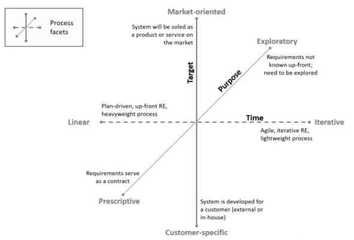

Processo de Desenvolvimento de Software
Metodologia
GUPTA
De acordo com as considerações de Gupta (2008)¹, é fundamental que a seleção da abordagem de desenvolvimento de software leve em conta uma série de critérios relevantes. Entre esses critérios estão as necessidades e requisitos específicos do projeto, bem como o ambiente e a cultura organizacional em que o projeto será executado. Além disso, o tamanho e a complexidade do projeto, o risco envolvido, o orçamento disponível e o prazo para a conclusão do projeto também desempenham um papel crucial na escolha adequada da abordagem.
É importante ressaltar que essa decisão não pode ser tomada de forma isolada ou estática. Pelo contrário, ela requer um processo contínuo de revisão e adaptação ao longo do tempo, visando garantir o sucesso do projeto. Dessa forma, é imprescindível monitorar e reavaliar regularmente a abordagem adotada, a fim de assegurar que esteja alinhada com as necessidades e condições do projeto. Veja a tabela abaixo.
| Requisitos | Cascata | Prototipação | Interativo e Incremental | Evolutivo | Spiral | RAD | Nosso Contexto |
|---|---|---|---|---|---|---|---|
| Os requisitos são facilmente compreensíveis e definidos? | Sim | Não | Não | Não | Não | Sim | Sim |
| Mudamos os requisitos com bastante frequência? | Não | Sim | Não | Não | Não | Sim | Não |
| Podemos mudar os requisitos no início do ciclo? | Sim | Não | Sim | Sim | Não | Sim | Sim |
| Os requisitos indicam um sistema complexo a ser construído? | Não | Sim | Sim | Sim | Não | Sim | Sim |
Tabela 1 - Análise de processos (Fonte: Gupta, 20019)
Facetas
Diversos aspectos do processo de Engenharia de Requisitos são abordados no IREB (2022)², fornecendo uma estrutura para identificar as características dos requisitos do projeto. A figura 1 apresenta a estrutura do diagrama, destacando os pontos relevantes a serem considerados.
É importante ressaltar que o IREB (2022)² oferece diretrizes valiosas para a análise e compreensão abrangente dos requisitos de um projeto. Ao utilizar essa estrutura, é possível examinar diferentes facetas do processo de Engenharia de Requisitos, permitindo uma identificação mais precisa das necessidades e características essenciais para o sucesso do projeto.

Figura 1 - Facetas do processo de ER (Fonte: IREB, 2022)
Ao analisar as descrições das facetas do processo de Engenharia de Requisitos, concluímos que o mesmo será caracterizado por ser iterativo, exploratório e orientado ao mercado. Durante essa análise, foram considerados os seguintes aspectos:
-
Requisitos não completamente conhecidos desde o início: Reconhecemos que os requisitos do projeto podem evoluir ao longo do tempo e não estar totalmente definidos desde o início. Isso implica em uma abordagem flexível que permita ajustes e adaptações durante o desenvolvimento.
-
Ciclos curtos de feedback pela proximidade do time de desenvolvimento com o cliente: A proximidade entre a equipe de desenvolvimento e o cliente possibilita a realização de ciclos curtos de feedback, permitindo uma comunicação eficaz e rápida para entender as necessidades e realizar ajustes ao longo do processo.
-
Priorização e negociação de requisitos devido à duração do projeto: Dada a duração do projeto, é necessário estabelecer prioridades e negociar requisitos conforme as restrições de tempo e recursos. Isso envolve tomar decisões estratégicas para garantir a entrega de valor dentro do prazo e do orçamento estabelecidos.
-
Foco no desenvolvimento de um produto utilizável por diversos clientes: Embora exista um cliente inicial, o objetivo do projeto é desenvolver um produto que possa ser utilizado por uma ampla gama de clientes, cujos usuários individuais não são identificáveis antecipadamente. Isso requer uma abordagem que leve em consideração as necessidades e expectativas de um público diversificado.
-
Participação conjunta da equipe do projeto e do cliente na elicitação de requisitos: Embora a equipe do projeto tenha um papel central na elicitação de requisitos, é importante ressaltar que a participação do cliente é essencial. A colaboração entre ambas as partes contribui para uma compreensão mais abrangente das necessidades e para a definição dos requisitos de forma eficaz.
Portanto, com base nesses aspectos, fica evidente a necessidade de adotar uma abordagem iterativa, exploratória e orientada ao mercado no processo de Engenharia de Requisitos, considerando a natureza dinâmica e a complexidade do projeto em questão. Sendo assim selecionado pela equipe o Kanban e o Scrum para o desenvolvimento do software, apesar do GUPTA nos indicar a metodologia RAD.
Scrum
| Planejamento da sprint | Reuniao realizada no inicio de cada sprint com o objetivo de definir as Historias de Usuario entregaveis na sprint. | Discord | |
| Sprint | Período de realizacao das atividades propostas durante o planejamento da sprint. Definimos a duração da sprint como duas semanas. | Discord | |
| Review da sprint | Reuniao realizada pela equipe para revisar as funcionalidades concluidas no final da sprint com o Product owner (PO). | Discord | |
| Retrospectiva da sprint | Processo também realizado ao final de cada sprint para verificar a qualidade do produto e da equipe. | Discord | |
| Daily Scrum | Reunião diária com duração máxima de 15 minutos, na qual os membros da equipe devem discutir o progresso de trabalho da Sprint desde a última reunião diária. | Discord (Assincrono) | |
| Backlog do produto | Lista dos requisitos do produto que necessitam ser desenvolvidos. | Trello |
Kanban
O Kanban é um método que se baseia nos princípios Lean e Ágil, com o objetivo de aprimorar a execução de serviços, garantir entregas de valor contínuas e promover a evolução constante do sistema de produção por meio da resolução sistemática de problemas. Sua implantação simplificada e a capacidade de obter resultados rápidos, mesmo em equipes com pouca familiaridade com metodologias ágeis, tornam-no uma escolha promissora para nosso projeto. Segue abaixo as práticas que estabelecemos para o processo:
- Visualizar o Trabalho (modelo visual)
- Limitar o Trabalho em Progresso (WIP)
- Gerenciar o Fluxo
- Critérios para puxar/mover os itens (DOR e DONE)
- Estabelecer Ciclos de Feedback
- Melhorar Colaborativamente, Evoluir Experimentalmente
Etapa 1 - Requisitos
| Atividade | Método | Ferramenta | Entrega |
|---|---|---|---|
| Elicitação e Descoberta | Entrevista com cliente | Meet | Compreender o negócio do cliente, juntamente com seus objetivos, para extrair informações essenciais para a definição dos requisitos |
| Análise e Consenso | Reunião com devs e cliente | Meet | Chegar a um consenso sobre os requisitos específicos que serão atendidos. Buscar alinhar as visões do desenvolvedor e do cliente, garantindo que as soluções propostas sejam adequadas e atendam às expectativas |
| Declaração | Histórias de Usuários | Trello e GitHub Pages | Expressar os requisitos do projeto de forma compreensível, utilizando linguagem natural e evitando termos técnicos excessivos |
| Organização e Atualização | Product Backlog (Kanban) | Trello e GitHub Pages | Manter uma organização adequada e acompanhar o estado de cada requisito ao longo do ciclo de desenvolvimento |
| Verificação | Reunião com devs | Meet | Avaliar se os requisitos foram interpretados corretamente e se foram implementadas as funcionalidades correspondentes |
| Validação | Reunião devs e cliente | Meet | Confirmação de que os requisitos atendem às necessidades reais do cliente |
Etapa 2 - Construção
| Atividade | Método | Ferramenta | Entrega |
|---|---|---|---|
| Implementação dos MVP's | Revisões de código | GitHub | Entregas incrementais de valor para o cliente |
Etapa 3 - Teste
| Atividade | Método | Ferramenta | Entrega |
|---|---|---|---|
| Testagem | Testes Unitários | Jasmine | Detecção precoce de erros |
Histórico de revisão
| Data | Versão | Descrição | Autor(es) |
|---|---|---|---|
| 26/04/2023 | 1.0 | Criação e estruturação do documento | Paulo Borba |
| 24/05/2023 | 1.1 | Criação e estruturação do documento | Paulo Borba e Felipe Nunes |
| 13/06/2023 | 2.0 | Alterações de acordo com o parecer do professor na entrega 2 | Vinícius |
| 22/06/2023 | 2.1 | Alterações nas atividades da Engenharia de software | Vinícius |